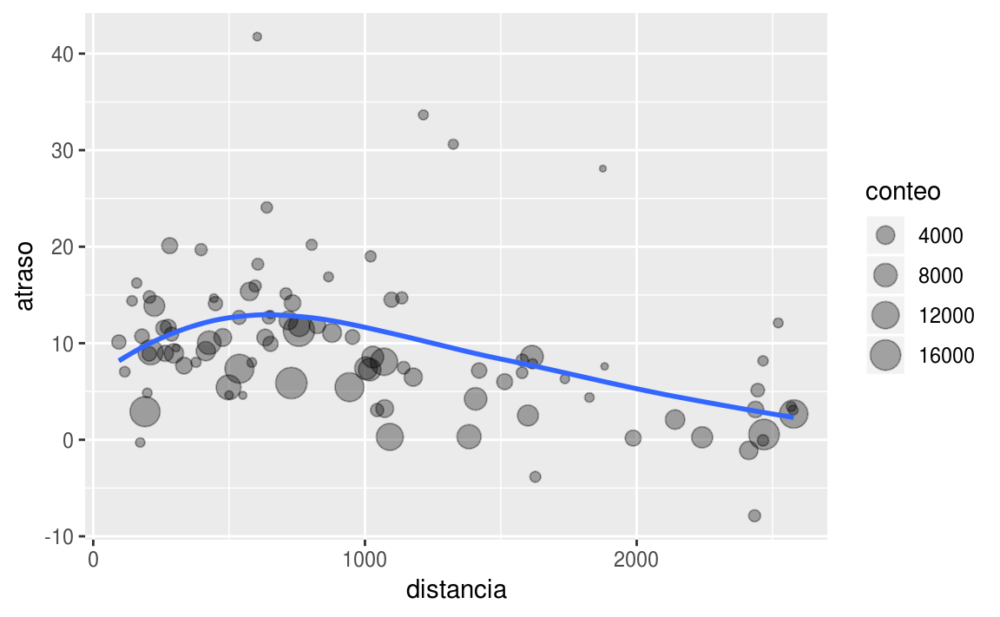
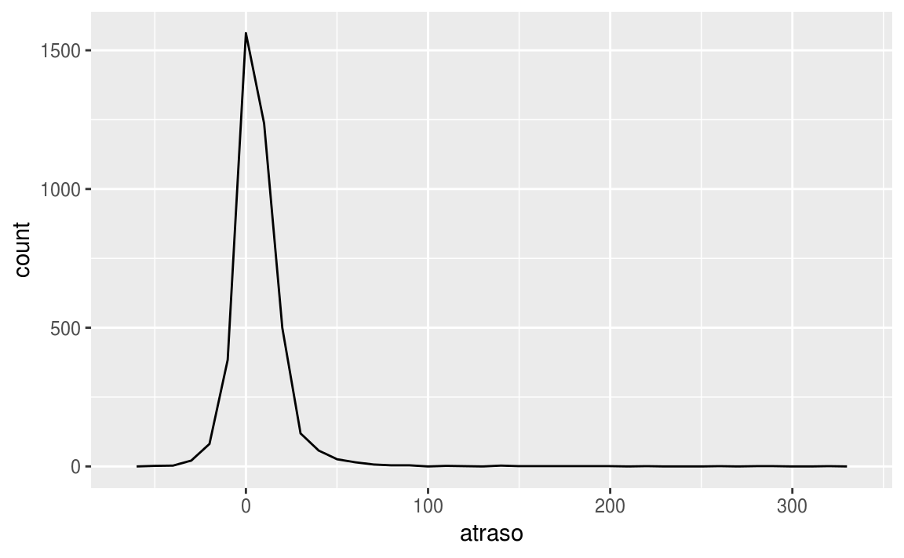
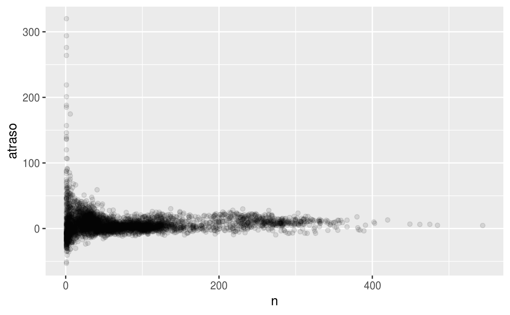
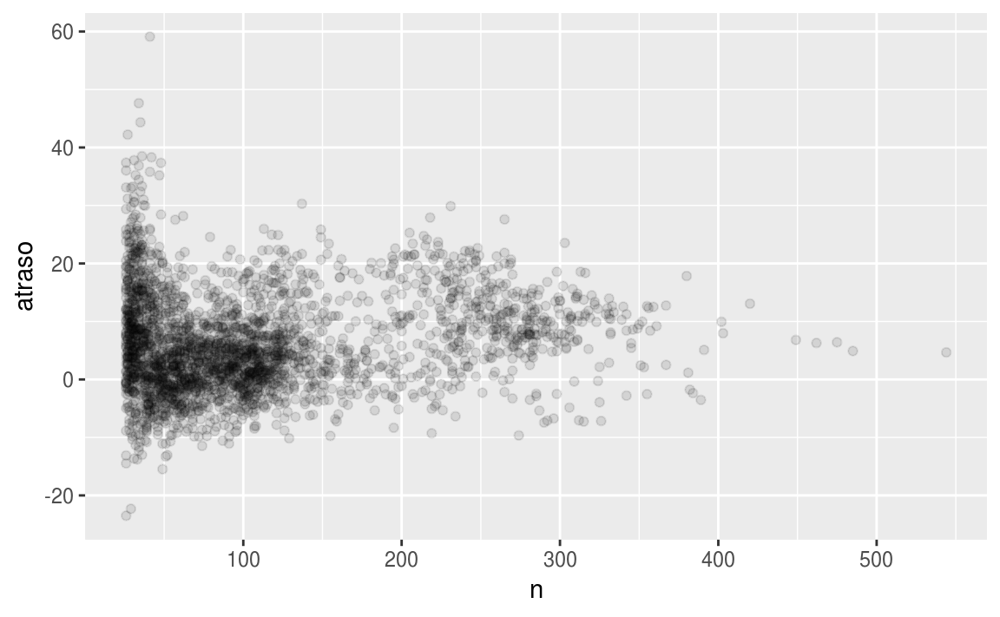
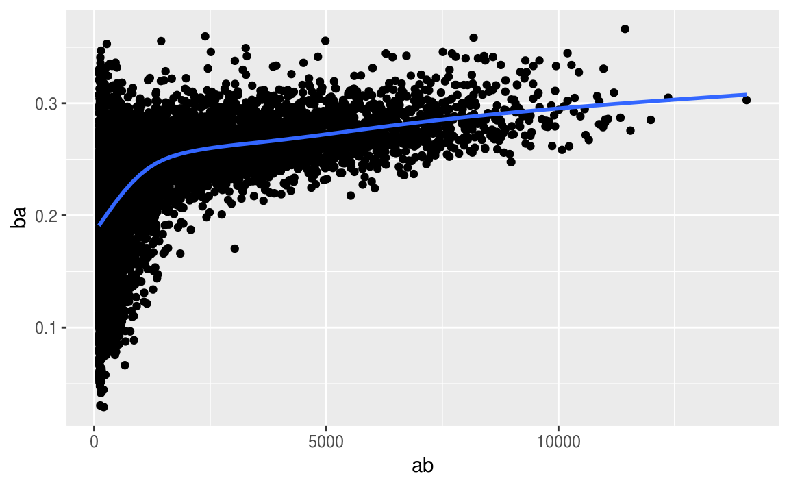

26 Transformación de datos
26.1 Introducción
La visualización es una herramienta importante para para la generación de conocimiento, sin embargo es raro que obtengas los datos exactamente en la forma correcta que necesitas. A menudo necesitarás crear algunas variables nuevas o resúmenes, o tal vez solo quieras cambiar el nombre de las variables o reordenar las observaciones para facilitar el trabajo con los datos. En este capítulo aprenderás cómo hacer todo eso (¡y más!), incluyendo cómo transformar tus datos utilizando el paquete dplyr y el uso de un nuevo conjunto de datos sobre salida de vuelos de la ciudad de Nueva York en el año 2013.
26.1.1 Prerequisitos
En este capítulo nos enfocaremos en cómo usar el paquete dplyr, otro miembro central de tidyverse. Ilustraremos las ideas clave con el conjunto de datos vuelos que aparecen originalmente en el paquete nycflights13, pero para este caso utilizaremos la versión traducida incluida en el paquete datos y usaremos ggplot2 para ayudarnos a comprender los datos.
#devtools::install_github("cienciadedatos/datos")
library(datos)
library(tidyverse)Toma nota acerca del mensaje de conflictos que se imprime cuando carga el paquete tidyverse. Te dice que dplyr sobrescribe algunas funciones en R base. Si deseas usar la versión base de estas funciones después de cargar dplyr, necesitarás usar sus nombres completos: stats::filter() y stats::lag().
26.1.2 vuelos
Para explorar los verbos básicos de manipulación de datos de dplyr, usaremos vuelos. Este conjunto de datos contiene todos los vuelos 336, 776 que partieron de la ciudad de Nueva York durante el 2013. Los datos provienen del Departamento de Estadísticas de Transporte de los Estados Unidos, y están documentados en ?vuelos.
vuelos
#> # A tibble: 336,776 x 19
#> anio mes dia horario_salida salida_programa… atraso_salida
#> <int> <int> <int> <int> <int> <dbl>
#> 1 2013 1 1 517 515 2
#> 2 2013 1 1 533 529 4
#> 3 2013 1 1 542 540 2
#> 4 2013 1 1 544 545 -1
#> 5 2013 1 1 554 600 -6
#> 6 2013 1 1 554 558 -4
#> # … with 3.368e+05 more rows, and 13 more variables:
#> # horario_llegada <int>, llegada_programada <int>, atraso_llegada <dbl>,
#> # aerolinea <chr>, vuelo <int>, codigo_cola <chr>, origen <chr>,
#> # destino <chr>, tiempo_vuelo <dbl>, distancia <dbl>, hora <dbl>,
#> # minuto <dbl>, fecha_hora <dttm>Es posible que observes que este conjunto de datos se imprime de una forma un poco diferente a otros que podrías haber utilizado en el pasado: solo muestra las primeras filas y todas las columnas que caben en tu pantalla. Para ver todo el conjunto de datos, puedes ejecutar View(vuelos) que abrirá el conjunto de datos en el visor de RStudio. En este caso se imprime de manera diferente porque es un tibble. Los tibbles son marcos de datos, pero ligeramente ajustados para que funcionen mejor en el tidyverse. Por ahora, no necesitas preocuparte por las diferencias; hablaremos en más detalle de los tibbles en wrangle.
También podrás haber notado la fila de tres (o cuatro) abreviaturas de letras debajo de los nombres de las columnas. Estos describen el tipo de cada variable:
intsignifica enteros.dblsignifica dobles, o números reales.chrsignifica vectores de caracteres o cadenas.dttmsignifica fechas y horas (una fecha + una hora).
Hay otros tres tipos comunes de variables que no se usan en este conjunto de datos, pero que encontrará más adelante en el libro:
lglsignifica lógico, vectores que solo contienenTRUE(verdadero) oFALSE(falso).fctrsignifica factores, que R usa para representar variables categóricas con valores posibles fijos.datesignifica fechas.
26.1.3 Lo básico de dplyr
En este capítulo, aprenderás las cinco funciones clave de dplyr que te permiten resolver la gran mayoría de tus desafíos de manipulación de datos:
- Filtrar o elegir las observaciones por sus valores (
filter()— del inglés filtrar). - Reordenar las filas (
arrange()— del inglés organizar). - Seleccionar las variables por sus nombres (
select()— del inglés seleccionar). - Crear nuevas variables con transformaciones de variables existentes (
mutate()— del inglés mutar o transformar). - Contraer muchos valores en un solo resumen (
summarise()— del inglés resumir).
Todas estas funciones se pueden usar junto con group_by() (del inglés agrupar por), que cambia el alcance de cada función para que actúe ya no sobre todo el conjunto de datos sino grupo por grupo. Estas seis funciones proporcionan los verbos para un lenguaje de manipulación de datos.
Todos los verbos funcionan de manera similar:
El primer argumento es un data frame.
Los argumentos posteriores describen qué hacer con el data frame usando los nombres de las variables (sin comillas).
El resultado es un nuevo data frame.
En conjunto, estas propiedades hacen que sea fácil encadenar varios pasos simples para lograr un resultado complejo. Vamos a sumergirnos y ver cómo funcionan estos verbos.
26.2 Filtrar filas con filter()
filter() te permite filtrar un subconjunto de observaciones basadas en sus valores. El primer argumento es el nombre del data frame. El segundo y los siguientes argumentos son las expresiones que filtran el data frame. Por ejemplo, podemos seleccionar todos los vuelos del 1 de enero con:
filter(vuelos, mes == 1, dia == 1)
#> # A tibble: 842 x 19
#> anio mes dia horario_salida salida_programa… atraso_salida
#> <int> <int> <int> <int> <int> <dbl>
#> 1 2013 1 1 517 515 2
#> 2 2013 1 1 533 529 4
#> 3 2013 1 1 542 540 2
#> 4 2013 1 1 544 545 -1
#> 5 2013 1 1 554 600 -6
#> 6 2013 1 1 554 558 -4
#> # … with 836 more rows, and 13 more variables: horario_llegada <int>,
#> # llegada_programada <int>, atraso_llegada <dbl>, aerolinea <chr>,
#> # vuelo <int>, codigo_cola <chr>, origen <chr>, destino <chr>,
#> # tiempo_vuelo <dbl>, distancia <dbl>, hora <dbl>, minuto <dbl>,
#> # fecha_hora <dttm>Cuando ejecutas esa línea de código, dplyr ejecuta la operación de filtrado y devuelve un nuevo data frame. Las funciones dplyr nunca modifican sus entradas, por lo que si deseas guardar el resultado, necesitarás usar el operador de asignación, <-:
ene1 <- filter(vuelos, mes == 1, dia == 1)R imprime los resultados o los guarda en una variable. Si deseas hacer ambas cosas, puedes escribir toda la línea entre paréntesis:
(dic25 <- filter(vuelos, mes == 12, dia == 25))
#> # A tibble: 719 x 19
#> anio mes dia horario_salida salida_programa… atraso_salida
#> <int> <int> <int> <int> <int> <dbl>
#> 1 2013 12 25 456 500 -4
#> 2 2013 12 25 524 515 9
#> 3 2013 12 25 542 540 2
#> 4 2013 12 25 546 550 -4
#> 5 2013 12 25 556 600 -4
#> 6 2013 12 25 557 600 -3
#> # … with 713 more rows, and 13 more variables: horario_llegada <int>,
#> # llegada_programada <int>, atraso_llegada <dbl>, aerolinea <chr>,
#> # vuelo <int>, codigo_cola <chr>, origen <chr>, destino <chr>,
#> # tiempo_vuelo <dbl>, distancia <dbl>, hora <dbl>, minuto <dbl>,
#> # fecha_hora <dttm>26.2.1 Comparaciones
Para usar el filtrado de manera efectiva, debes saber cómo seleccionar las observaciones que deseas utilizando los operadores de comparación. R proporciona el conjunto estándar: >, >=, <, <=, != (no igual) y == (igual).
Cuando comienzas con R, el error más fácil de cometer es usar = en lugar de == cuando se prueba la igualdad. Cuando esto sucede, obtendrás un error informativo:
filter(vuelos, mes = 1)
#> `mes` (`mes = 1`) must not be named, do you need `==`?Hay otro problema común que puedes encontrar al usar ==: números de coma flotante. ¡Estos resultados pueden sorprenderte!
sqrt(2)^2 == 2
#> [1] FALSE
1 / 49 * 49 == 1
#> [1] FALSELas computadoras usan aritmética de precisión finita (obviamente no pueden almacenar una cantidad infinita de dígitos), así que recuerda que cada número que ves es una aproximación. En lugar de confiar en ==, usa near() (cercano, en inglés):
near(sqrt(2)^2, 2)
#> [1] TRUE
near(1 / 49 * 49, 1)
#> [1] TRUE26.2.2 Operadores lógicos
Múltiples argumentos para filter() se combinan con “y”: cada expresión debe ser verdadera para que una fila se incluya en el output. Para otros tipos de combinaciones, necesitarás usar operadores Booleanos: & es “y”, | es “o”, y ! es “no”. La figura @ref(fig:bool-ops) muestra el conjunto completo de operaciones Booleanas.
Figure 26.1: Complete set of boolean operations. x is the left-hand circle, y is the right-hand circle, and the shaded region show which parts each operator selects.
El siguiente código encuentra todos los vuelos que partieron en noviembre o diciembre:
filter(vuelos, mes == 11 | mes == 12)El orden de las operaciones no funciona como en español. No puedes escribir filter(vuelos, mes == 11 | 12), que literalmente puede traducirse como “encuentra todos los vuelos que partieron en noviembre o diciembre”. En cambio, encontrará todos los meses que son iguales a 11 | 12, una expresión que resulta en ‘TRUE’ (verdadero). En un contexto numérico (como aquí), ‘TRUE’ se convierte en uno, por lo que encuentra todos los vuelos en enero, no en noviembre o diciembre. ¡Esto es bastante confuso!
Una manera rápida y útil para resolver este problema es x %in% y (del inglés x en y). Esto seleccionará cada fila donde x es uno de los valores eny. Podríamos usarlo para reescribir el código de arriba:
nov_dic <- filter(vuelos, mes %in% c(11, 12))A veces puedes simplificar subconjuntos complicados al recordar la ley de De Morgan: !(x & y) es lo mismo que !x | !y, y !(x | y) es lo mismo que !x & !y. Por ejemplo, si deseas encontrar vuelos que no se retrasaron (en llegada o partida) en más de dos horas, puedes usar cualquiera de los dos filtros siguientes:
filter(vuelos, !(atraso_llegada > 120 | atraso_salida > 120))
filter(vuelos , atraso_llegada <= 120, atraso_salida <= 120)Además de & y |, R también tiene && y ||. ¡No los uses aquí! Aprenderás cuándo deberías usarlos en [conditional execution].
Siempre que empieces a usar expresiones complejas de varias partes en filter(), considera convertirlas en variables explícitas. Eso hace que sea mucho más fácil verificar tu trabajo. Aprenderás cómo crear nuevas variables en breve.
26.2.3 Valores faltantes
Una característica importante de R que puede hacer que la comparación sea difícil son los valores faltantes, o NAs (del inglés “no disponibles”). NA representa un valor desconocido por lo que los valores perdidos son “contagiosos”: casi cualquier operación que involucre un valor desconocido también será desconocida.
NA > 5
#> [1] NA
10 == NA
#> [1] NA
NA + 10
#> [1] NA
NA / 2
#> [1] NAEl resultado más confuso es este:
NA == NA
#> [1] NAEs más fácil entender por qué esto es cierto con un poco más de contexto:
# Sea x la edad de María. No sabemos qué edad tiene.
x <- NA
# Sea y la edad de Juan. No sabemos qué edad tiene.
y <- NA
# ¿Tienen Juan y María la misma edad?
x == y
#> [1] NA
# ¡No sabemos!Si deseas determinar si falta un valor, usa is.na():
is.na(x)
#> [1] TRUEfilter() solo incluye filas donde la condición es TRUE; excluye ambos valores FALSE y NA. Si deseas conservar valores perdidos, solicítalos explícitamente:
df <- tibble(x = c(1, NA, 3))
filter(df, x > 1)
#> # A tibble: 1 x 1
#> x
#> <dbl>
#> 1 3
filter(df, is.na(x) | x > 1)
#> # A tibble: 2 x 1
#> x
#> <dbl>
#> 1 NA
#> 2 326.2.4 Ejercicios
Encuentra todos los vuelos que:
Tuvieron un retraso de llegada de dos o más horas
Volaron a Houston (
IAHoHOU)Fueron operados por United, American o Delta
Partieron en verano (julio, agosto y septiembre)
Llegaron más de dos horas tarde, pero no salieron tarde
Se retrasaron por lo menos una hora, pero repusieron más de 30 minutos en vuelo
Partieron entre la medianoche y las 6 a.m. (incluyente)
Otra función de dplyr útil para usar filtros es
between(). ¿Qué hace? ¿Puedes usarlo para simplificar el código necesario para responder a los desafíos anteriores?¿Cuántos vuelos tienen datos faltantes de
horario_salida? ¿Qué otras variables tienen valores faltantes? ¿Qué representan estas filas?¿Por qué
NA ^ 0no es faltante? ¿Por quéNA | TRUEno es faltante? ¿Por quéFALSE & NAno es faltante? ¿Puedes descubrir la regla general? (¡NA * 0es un contraejemplo complicado!)
26.3 Reordenar las filas con arrange()
arrange() funciona de manera similar a filter() excepto que en lugar de seleccionar filas, cambia su orden. La función toma un data frame y un conjunto de nombres de columnas (o expresiones más complicadas) para ordenar acorde. Si proporcionas más de un nombre de columna, cada columna adicional se utilizará para romper empates en los valores de las columnas anteriores:
arrange(vuelos, anio, mes, dia)
#> # A tibble: 336,776 x 19
#> anio mes dia horario_salida salida_programa… atraso_salida
#> <int> <int> <int> <int> <int> <dbl>
#> 1 2013 1 1 517 515 2
#> 2 2013 1 1 533 529 4
#> 3 2013 1 1 542 540 2
#> 4 2013 1 1 544 545 -1
#> 5 2013 1 1 554 600 -6
#> 6 2013 1 1 554 558 -4
#> # … with 3.368e+05 more rows, and 13 more variables:
#> # horario_llegada <int>, llegada_programada <int>, atraso_llegada <dbl>,
#> # aerolinea <chr>, vuelo <int>, codigo_cola <chr>, origen <chr>,
#> # destino <chr>, tiempo_vuelo <dbl>, distancia <dbl>, hora <dbl>,
#> # minuto <dbl>, fecha_hora <dttm>Usa desc() para reordenar por una columna en orden descendente:
`{r} arrange(vuelos, desc(atraso_salida)) `
Los valores faltantes siempre se ordenan al final:
df <- tibble(x = c(5, 2, NA))
arrange(df, x)
#> # A tibble: 3 x 1
#> x
#> <dbl>
#> 1 2
#> 2 5
#> 3 NA
arrange(df, desc(x))
#> # A tibble: 3 x 1
#> x
#> <dbl>
#> 1 5
#> 2 2
#> 3 NA26.3.1 Ejercicios
¿Cómo podrías usar
arrange()para ordenar todos los valores faltantes al comienzo? (Sugerencia: usais.na()).Ordena
vuelospara encontrar los vuelos más retrasados. Encuentra los vuelos que salieron más temprano.Ordena
vuelospara encontrar los vuelos más rápidos.¿Cuáles vuelos viajaron más tiempo? ¿Cuál viajó menos tiempo?
26.4 Seleccionar columnas con select()
No es raro obtener conjuntos de datos con cientos o incluso miles de variables. En este caso, el primer desafío a menudo se reduce a las variables que realmente te interesan. select() te permite seleccionar rápidamente un subconjunto útil utilizando operaciones basadas en los nombres de las variables.
select() no es muy útil con los datos de los vuelos porque solo tenemos 19 variables, pero aún podemos describir la idea general:
# Seleccionar columnas por nombre
select(vuelos, anio, mes, dia)
#> # A tibble: 336,776 x 3
#> anio mes dia
#> <int> <int> <int>
#> 1 2013 1 1
#> 2 2013 1 1
#> 3 2013 1 1
#> 4 2013 1 1
#> 5 2013 1 1
#> 6 2013 1 1
#> # … with 3.368e+05 more rows
# Seleccionar todas las columnas entre anio y dia (incluyente)
select(vuelos, anio:dia)
#> # A tibble: 336,776 x 3
#> anio mes dia
#> <int> <int> <int>
#> 1 2013 1 1
#> 2 2013 1 1
#> 3 2013 1 1
#> 4 2013 1 1
#> 5 2013 1 1
#> 6 2013 1 1
#> # … with 3.368e+05 more rows
# Seleccionar todas las columnas excepto aquellas entre anio en dia (incluyente)
select(vuelos, -(anio:dia))
#> # A tibble: 336,776 x 16
#> horario_salida salida_programa… atraso_salida horario_llegada
#> <int> <int> <dbl> <int>
#> 1 517 515 2 830
#> 2 533 529 4 850
#> 3 542 540 2 923
#> 4 544 545 -1 1004
#> 5 554 600 -6 812
#> 6 554 558 -4 740
#> # … with 3.368e+05 more rows, and 12 more variables:
#> # llegada_programada <int>, atraso_llegada <dbl>, aerolinea <chr>,
#> # vuelo <int>, codigo_cola <chr>, origen <chr>, destino <chr>,
#> # tiempo_vuelo <dbl>, distancia <dbl>, hora <dbl>, minuto <dbl>,
#> # fecha_hora <dttm>Hay una serie de funciones auxiliares que puedes usar dentro de select():
starts_with("abc"): coincide con los nombres que comienzan con “abc”.ends_with("xyz"): coincide con los nombres que terminan con “xyz”.contains("ijk"): coincide con los nombres que contienen “ijk”.matches("(.)\\1"): selecciona variables que coinciden con una expresión regular. Éste coincide con cualquier variable que contenga caracteres repetidos. Aprenderás más sobre expresiones regulares en strings.num_range("x", 1:3): coincide conx1,x2yx3.
Consulta ?select para ver más detalles.
select() se puede usar para cambiar el nombre de las variables, pero rara vez es útil porque descarta todas las variables que no se mencionan explícitamente. En su lugar, utiliza rename(), que es una variante de select() que mantiene todas las variables que no se mencionan explícitamente:
rename(vuelos, cola_num = codigo_cola)
#> # A tibble: 336,776 x 19
#> anio mes dia horario_salida salida_programa… atraso_salida
#> <int> <int> <int> <int> <int> <dbl>
#> 1 2013 1 1 517 515 2
#> 2 2013 1 1 533 529 4
#> 3 2013 1 1 542 540 2
#> 4 2013 1 1 544 545 -1
#> 5 2013 1 1 554 600 -6
#> 6 2013 1 1 554 558 -4
#> # … with 3.368e+05 more rows, and 13 more variables:
#> # horario_llegada <int>, llegada_programada <int>, atraso_llegada <dbl>,
#> # aerolinea <chr>, vuelo <int>, cola_num <chr>, origen <chr>,
#> # destino <chr>, tiempo_vuelo <dbl>, distancia <dbl>, hora <dbl>,
#> # minuto <dbl>, fecha_hora <dttm>Otra opción es usar select() junto con el auxiliar everything() (todo, en inglés). Esto es útil si tienes un grupo de variables que te gustaría mover al comienzo del data frame.
select(vuelos, fecha_hora, tiempo_vuelo, everything())
#> # A tibble: 336,776 x 19
#> fecha_hora tiempo_vuelo anio mes dia horario_salida
#> <dttm> <dbl> <int> <int> <int> <int>
#> 1 2013-01-01 05:00:00 227 2013 1 1 517
#> 2 2013-01-01 05:00:00 227 2013 1 1 533
#> 3 2013-01-01 05:00:00 160 2013 1 1 542
#> 4 2013-01-01 05:00:00 183 2013 1 1 544
#> 5 2013-01-01 06:00:00 116 2013 1 1 554
#> 6 2013-01-01 05:00:00 150 2013 1 1 554
#> # … with 3.368e+05 more rows, and 13 more variables:
#> # salida_programada <int>, atraso_salida <dbl>, horario_llegada <int>,
#> # llegada_programada <int>, atraso_llegada <dbl>, aerolinea <chr>,
#> # vuelo <int>, codigo_cola <chr>, origen <chr>, destino <chr>,
#> # distancia <dbl>, hora <dbl>, minuto <dbl>26.4.1 Ejercicios
Haz una lluvia de ideas de tantas maneras como sea posible para seleccionar
horario_salida,atraso_salida,horario_llegada, yatraso_llegadadevuelos.¿Qué sucede si incluyes el nombre de una variable varias veces en una llamada
select()?¿Qué hace la función
one_of()? Por qué podría ser útil en conjunto con este vector?
vars <- c ("anio", "mes", "dia", "atraso_salida", "atraso_llegada")- ¿Te sorprende el resultado de ejecutar el siguiente código? ¿Cómo tratan por defecto las funciones auxiliares de
select()a las palabras en mayúsculas o en minúsculas? ¿Cómo puedes cambiar ese comportamiento predeterminado?
select(vuelos, contains("SALIDA"))26.5 Añadir nuevas variables con mutate()
Además de seleccionar conjuntos de columnas existentes, a menudo es útil crear nuevas columnas en función de columnas existentes. Ese es el trabajo de mutate() (del inglés mutar o transformar).
mutate() siempre agrega nuevas columnas al final de un conjunto de datos, así que comenzaremos creando un conjunto de datos más pequeño para que podamos ver las nuevas variables. Recuerda que cuando usas RStudio, la manera más fácil de ver todas las columnas es View().
vuelos_sml <- select(vuelos,
anio:dia,
starts_with("atraso"),
distancia,
tiempo_vuelo
)
mutate(vuelos_sml,
ganancia = atraso_salida - atraso_llegada,
velocidad = distancia / tiempo_vuelo * 60
)
#> # A tibble: 336,776 x 9
#> anio mes dia atraso_salida atraso_llegada distancia tiempo_vuelo
#> <int> <int> <int> <dbl> <dbl> <dbl> <dbl>
#> 1 2013 1 1 2 11 1400 227
#> 2 2013 1 1 4 20 1416 227
#> 3 2013 1 1 2 33 1089 160
#> 4 2013 1 1 -1 -18 1576 183
#> 5 2013 1 1 -6 -25 762 116
#> 6 2013 1 1 -4 12 719 150
#> # … with 3.368e+05 more rows, and 2 more variables: ganancia <dbl>,
#> # velocidad <dbl>Ten en cuenta que puedes consultar las columnas que acabas de crear:
mutate(vuelos_sml,
ganancia = atraso_salida - atraso_llegada,
horas = tiempo_vuelo / 60,
ganacia_por_hora = ganancia / horas
)
#> # A tibble: 336,776 x 10
#> anio mes dia atraso_salida atraso_llegada distancia tiempo_vuelo
#> <int> <int> <int> <dbl> <dbl> <dbl> <dbl>
#> 1 2013 1 1 2 11 1400 227
#> 2 2013 1 1 4 20 1416 227
#> 3 2013 1 1 2 33 1089 160
#> 4 2013 1 1 -1 -18 1576 183
#> 5 2013 1 1 -6 -25 762 116
#> 6 2013 1 1 -4 12 719 150
#> # … with 3.368e+05 more rows, and 3 more variables: ganancia <dbl>,
#> # horas <dbl>, ganacia_por_hora <dbl>Si solo quieres conservar las nuevas variables, usa transmute():
transmute(vuelos,
ganancia = atraso_salida - atraso_llegada,
horas = tiempo_vuelo / 60,
ganancia_por_hora = ganancia / horas
)
#> # A tibble: 336,776 x 3
#> ganancia horas ganancia_por_hora
#> <dbl> <dbl> <dbl>
#> 1 -9 3.78 -2.38
#> 2 -16 3.78 -4.23
#> 3 -31 2.67 -11.6
#> 4 17 3.05 5.57
#> 5 19 1.93 9.83
#> 6 -16 2.5 -6.4
#> # … with 3.368e+05 more rows26.5.1 Funciones de creación útiles
Hay muchas funciones para crear nuevas variables que puedes usar con mutate(). La propiedad clave es que la función debe ser vectorizada: debe tomar un vector de valores como input, y devolver un vector con el mismo número de valores como output. No hay forma de enumerar todas las posibles funciones que podrías usar, pero aquí hay una selección de funciones que son útiles frecuentemente:
Operadores aritméticos:
+,-,*,/,^. Todos están vectorizados, usando las llamadas “reglas de reciclaje”. Si un parámetro es más corto que el otro, se extenderá automáticamente para tener la misma longitud. Esto es muy útil cuando uno de los argumentos es un solo número:tiempo_vuelo / 60,horas * 60 + minuto, etc.Los operadores aritméticos también son útiles junto con las funciones de agregar que aprenderás más adelante. Por ejemplo,
x / sum(x)calcula la proporción de un total, yy - mean(y)calcula la diferencia de la media.Aritmética modular:
%/%(división entera) y%%(resto), dondex == y * (x %/% y) + (x %% y). La aritmética modular es una herramienta útil porque te permite dividir enteros en partes. Por ejemplo, en el conjunto de datos de vuelos, puedes calcularhorayminutosdehorario_salidacon:
transmute(vuelos,
horario_salida,
hora = horario_salida %/% 100,
minuto = horario_salida %% 100
)
#> # A tibble: 336,776 x 3
#> horario_salida hora minuto
#> <int> <dbl> <dbl>
#> 1 517 5 17
#> 2 533 5 33
#> 3 542 5 42
#> 4 544 5 44
#> 5 554 5 54
#> 6 554 5 54
#> # … with 3.368e+05 more rowsLogaritmos:
log(),log2(),log10(). Los logaritmos son increíblemente útiles como transformación para trabajar con datos con múltiples órdenes de magnitud. También convierten las relaciones multiplicativas en aditivas, una característica que retomaremos en modelamiento.En igualdad de condiciones, recomendamos usar
log2()porque es más fácil de interpretar: una diferencia de 1 en la escala de registro corresponde a la duplicación de la escala original y una diferencia de -1 corresponde a dividir a la mitad.Rezagos:
lead()ylag()te permiten referirte a un valor adelante o un valor atrás (con rezago). Esto te permite calcular las diferencias móviles (por ejemplo,x - lag(x)) o encontrar cuándo cambian los valores (x! = lag (x)). Estos comandos son más útiles cuando se utilizan junto congroup_by(), que lo aprenderás en breve.
(x <- 1:10)
#> [1] 1 2 3 4 5 6 7 8 9 10
lag(x)
#> [1] NA 1 2 3 4 5 6 7 8 9
lead(x)
#> [1] 2 3 4 5 6 7 8 9 10 NA- Agregados acumulativos y móviles: R proporciona funciones para ejecutar sumas, productos, mínimos y máximos:
cumsum(),cumprod(),cummin(),cummax(); y dplyr proporcionacummean()para las medias acumuladas. Si necesitas calcular agregados móviles (es decir, una suma calculada en una ventana móvil), prueba el paquete RcppRoll.
x
#> [1] 1 2 3 4 5 6 7 8 9 10
cumsum(x)
#> [1] 1 3 6 10 15 21 28 36 45 55
cummean(x)
#> [1] 1.0 1.5 2.0 2.5 3.0 3.5 4.0 4.5 5.0 5.5Comparaciones lógicas:
<,<=,>,>=,!=sobre las cuales aprendiste antes. Si estás haciendo una secuencia compleja de operaciones lógicas, es a menudo una buena idea almacenar los valores provisionales en nuevas variables para que puedas comprobar que cada paso funciona como se espera.Ordenamiento: hay una serie de funciones de ordenamiento, pero deberías comenzar con
min_rank(). Esta función realiza el tipo más común de ordenamiento (por ejemplo, primero, segundo, tercero, etc.). El valor predeterminado otorga la menor posición a los valores más pequeños; usadesc(x)para dar la menor posición a los valores más grandes.
y <- c (1, 2, 2, NA, 3, 4)
min_rank(y)
#> [1] 1 2 2 NA 4 5
min_rank(desc(y))
#> [1] 5 3 3 NA 2 1Si min_rank() no hace lo que necesitas, consulta las variantes row_number(), dense_rank(), percent_rank(), cume_dist(),quantile(). Mira sus páginas de ayuda para más detalles.
row_number(y)
#> [1] 1 2 3 NA 4 5
dense_rank(y)
#> [1] 1 2 2 NA 3 4
percent_rank(y)
#> [1] 0.00 0.25 0.25 NA 0.75 1.00
cume_dist(y)
#> [1] 0.2 0.6 0.6 NA 0.8 1.026.5.2 Ejercicios
Las variables
horario_salidaysalida_programadatienen un formato conveniente para leer, pero es difícil realizar cualquier cálculo con ellas porque no son realmente números continuos. Transfórmalas hacia un formato más conveniente como número de minutos desde la medianoche.Compara
tiempo_vueloconhorario_llegada - horario_salida. ¿Qué esperas ver? ¿Qué ves? ¿Qué necesitas hacer para arreglarlo?Compara
horario_salida,salida_programada, yatraso_salida. ¿Cómo esperarías que esos tres números estén relacionados?Encuentra los 10 vuelos más retrasados utilizando una función de ordenamiento. ¿Cómo quieres manejar los empates? Lee atentamente la documentación de
min_rank().¿Qué devuelve
1:3 + 1:10? ¿Por qué?¿Qué funciones trigonométricas proporciona R?
26.6 Resúmenes agrupados con summarise()
El último verbo clave es summarise() (de resumir en inglés). Se encarga de colapsar un data frame en una sola fila:
summarise(vuelos, atraso = mean(atraso_salida, na.rm = TRUE))
#> # A tibble: 1 x 1
#> atraso
#> <dbl>
#> 1 12.6(Volveremos a lo que significa na.rm = TRUE en muy poco tiempo).
summarise() no es muy útil a menos que lo enlacemos con group_by(). Esto cambia la unidad de análisis del conjunto de datos completo a grupos individuales. Luego, cuando uses los verbos dplyr en un data frame agrupado, estos se aplicaran automáticamente “por grupo”. Por ejemplo, si aplicamos exactamente el mismo código a un data frame agrupado por fecha, obtenemos el retraso promedio por fecha:
por_dia <- group_by(vuelos, anio, mes, dia)
summarise(por_dia, atraso = mean(atraso_salida, na.rm = TRUE))
#> # A tibble: 365 x 4
#> # Groups: anio, mes [12]
#> anio mes dia atraso
#> <int> <int> <int> <dbl>
#> 1 2013 1 1 11.5
#> 2 2013 1 2 13.9
#> 3 2013 1 3 11.0
#> 4 2013 1 4 8.95
#> 5 2013 1 5 5.73
#> 6 2013 1 6 7.15
#> # … with 359 more rowsJuntos group_by() y summarise() proporcionan una de las herramientas que más comúnmente usarás cuando trabajes con dplyr: resúmenes agrupados. Pero antes de ir más allá con esto, tenemos que introducir una idea nueva y poderosa: el pipe (/paip/) (del inglés tubo o conducto).
26.6.1 Combinación de múltiples operaciones con el pipe
Imagina que queremos explorar la relación entre la distancia y la demora promedio para cada ubicación. Usando lo que sabes acerca de dplyr, podrías escribir un código como este:
por_destino <- group_by(vuelos, destino)
atraso <- summarise(por_destino,
conteo = n(),
distancia = mean(distancia, na.rm = TRUE),
atraso = mean(atraso_llegada, na.rm = TRUE)
)
atraso <- filter(atraso, conteo > 20, destino != "HNL")
# Parece que las demoras aumentan con una distancia de hasta ~ 750 millas
# y luego disminuyen. Tal vez a medida que los vuelos se hacen más
# largos, hay más habilidad para compensar las demoras en el aire?
ggplot(data = atraso, mapping = aes(x = distancia, y = atraso)) +
geom_point(aes(size = conteo), alpha = 1/3) +
geom_smooth(se = FALSE)
#> `geom_smooth()` using method = 'loess' and formula 'y ~ x'
Hay tres pasos para preparar esta información:
Agrupa los vuelos por destino.
Resume en cada grupo para calcular la distancia, la demora promedio y el número de vuelos.
Filtra para eliminar puntos ruidosos y el aeropuerto de Honolulu, que está casi dos veces más lejos que el próximo aeropuerto más cercano.
Nombrar cosas es difícil y enlentece nuestro análisis. Es entonces un poco frustrante escribir este código porque tenemos que dar un nombre a cada data frame intermedio, incluso si el data frame en sí mismo no nos importa.
Hay otra forma de abordar el mismo problema con el pipe, %>%:
atrasos <- vuelos %>%
group_by(destino) %>%
summarise(
conteo = n(),
distancia = mean(distancia, na.rm = TRUE),
atraso = mean(atraso_llegada, na.rm = TRUE)
) %>%
filter(conteo > 20, destino != "HNL")Esto se enfoca en las transformaciones, no en lo que se está transformando, lo que hace que el código sea más fácil de leer. Puedes leerlo como una serie de declaraciones imperativas: agrupa, luego resume y por último filtra. Como sugiere esta lectura, una buena forma de pronunciar %>% cuando se lee el código es “y luego”.
Lo que encuentras detrás del código, es que x %>% f(y) se convierte en f(x, y), y x %>% f(y) %>% g(z) se convierte en g(f(x, y), z) y así sucesivamente. Puedes usar el pipe para reescribir múltiples operaciones de forma que puedas leer de izquierda a derecha, de arriba hacia abajo. Usaremos pipes con frecuencia a partir de ahora porque mejora considerablemente la legibilidad del código, y volveremos al tema con más detalle en pipes.
Trabajar con el pipe es uno de los criterios clave para pertenecer al tidyverse. La única excepción es ggplot2: se escribió antes de que se descubriera el pipe. Lamentablemente, la siguiente iteración de ggplot2, ggvis, que sí utiliza el pipe, aún no está lista para la audiencia general.
26.6.2 Valores faltantes
Es posible que te hayas preguntado sobre el argumento na.rm que utilizamos anteriormente. ¿Qué pasa si no lo configuramos?
vuelos %>%
group_by(anio, mes, dia) %>%
summarise(mean = mean(atraso_salida))
#> # A tibble: 365 x 4
#> # Groups: anio, mes [12]
#> anio mes dia mean
#> <int> <int> <int> <dbl>
#> 1 2013 1 1 NA
#> 2 2013 1 2 NA
#> 3 2013 1 3 NA
#> 4 2013 1 4 NA
#> 5 2013 1 5 NA
#> 6 2013 1 6 NA
#> # … with 359 more rows¡Obtenemos muchos valores faltantes! Esto se debe a que las funciones de agregación obedecen la regla habitual de valores faltantes: si hay algún valor faltante en el input, el output será un valor faltante. Afortunadamente, todas las funciones de agregación tienen un argumento na.rm que elimina los valores faltantes antes del cálculo:
vuelos %>%
group_by(anio, mes, dia) %>%
summarise(mean = mean(atraso_salida, na.rm = TRUE))
#> # A tibble: 365 x 4
#> # Groups: anio, mes [12]
#> anio mes dia mean
#> <int> <int> <int> <dbl>
#> 1 2013 1 1 11.5
#> 2 2013 1 2 13.9
#> 3 2013 1 3 11.0
#> 4 2013 1 4 8.95
#> 5 2013 1 5 5.73
#> 6 2013 1 6 7.15
#> # … with 359 more rowsEn este caso, donde los valores faltantes representan vuelos cancelados, también podríamos abordar el problema eliminando primero los vuelos cancelados. Guardaremos este conjunto de datos para poder reutilizarlo en los siguientes ejemplos.
no_cancelados <- vuelos %>%
filter(!is.na(atraso_salida), !is.na(atraso_llegada))
no_cancelados %>%
group_by(anio, mes, dia) %>%
summarise(mean = mean(atraso_salida))
#> # A tibble: 365 x 4
#> # Groups: anio, mes [12]
#> anio mes dia mean
#> <int> <int> <int> <dbl>
#> 1 2013 1 1 11.4
#> 2 2013 1 2 13.7
#> 3 2013 1 3 10.9
#> 4 2013 1 4 8.97
#> 5 2013 1 5 5.73
#> 6 2013 1 6 7.15
#> # … with 359 more rows26.6.3 Conteos
Siempre que realices una agregación, es una buena idea incluir un conteo (n()) o un recuento de valores no faltantes (sum(!is.na(x))). De esta forma, puedes verificar que no estás sacando conclusiones basadas en cantidades muy pequeñas de datos. Por ejemplo, veamos los aviones (identificados por su número de cola) que tienen las demoras promedio más altas:
atrasos <- no_cancelados %>%
group_by(codigo_cola) %>%
summarise(
atraso = mean(atraso_llegada)
)
ggplot(data = atrasos, mapping = aes(x = atraso)) +
geom_freqpoly(binwidth = 10)
¡Hay algunos aviones que tienen una demora promedio de 5 horas (300 minutos)!
La historia es en realidad un poco más matizada. Podemos obtener más información si hacemos un diagrama de dispersión del número de vuelos contra la demora promedio:
atrasos <- no_cancelados %>%
group_by(codigo_cola) %>%
summarise(
atraso = mean(atraso_llegada, na.rm = TRUE),
n = n()
)
ggplot(data = atrasos, mapping = aes(x = n, y = atraso)) +
geom_point(alpha = 1/10)
No es sorprendente que haya una mayor variación en el promedio de retraso cuando hay pocos vuelos. La forma de este gráfico es muy característica: cuando trazas un promedio (o cualquier otra medida de resumen) contra el tamaño del grupo, verás que la variación decrece a medida que el tamaño de muestra aumenta.
Cuando se observa este tipo de gráficos, resulta útil eliminar los grupos con menor número de observaciones, ya que puedes ver más del patrón y menos de la variación extrema de los grupos pequeños. Esto es lo que te muestra cómo hacer el código siguiente, así como también te ofrece una manera muy útil para integrar ggplot2 en el flujo de trabajo de dplyr. Es un poco incómodo tener que cambiar de %>% a +, pero una vez que entiendas el código, verás que es bastante conveniente.
atrasos %>%
filter(n > 25) %>%
ggplot(mapping = aes(x = n, y = atraso)) +
geom_point(alpha = 1/10)
RStudio tip: un atajo en tu teclado que puede ser muy útil es Cmd/Ctrl + Shift + P. Este reenvía el fragmento enviado previamente del editor a la consola. Esto es muy útil cuando por ejemplo estás explorando el valor de n en el ejemplo anterior. Envías todo el bloque a la consola una vez con Cmd / Ctrl + Enter, y luego modificas el valor de n y presionas Cmd / Ctrl + Shift + P para reenviar el bloque completo.
Hay otra variación común de este tipo de patrón. Veamos cómo el rendimiento promedio de los bateadores en el béisbol está relacionado con el número de veces que están bateando. Aquí utilizas el conjunto de datos de bateadores para calcular el promedio de bateo (número de bateos / número de intentos) de cada jugador de béisbol de Grandes Ligas.
Cuando graficas la habilidad del bateador (medido por el promedio de bateo, ba) contra el número de oportunidades para golpear la pelota (medido por al bate,ab), verás dos patrones:
Como en el ejemplo anterior, la variación en nuestro estadístico de resumen disminuye a medida que obtenemos más observaciones.
Existe una correlación positiva entre la habilidad (
ba) y las oportunidades para golpear la pelota (ab). Esto se debe a que los equipos controlan quién puede jugar, y obviamente elegirán a sus mejores jugadores.
# Convierte a tibble para puedas imprimirlo de una manera legible
bateo <- as_tibble(bateadores)
rendimiento_bateadores <- bateo %>%
group_by(ID_jugador) %>%
summarise(
ba = sum(golpes, na.rm = TRUE) / sum(al_bate, na.rm = TRUE),
ab = sum(al_bate, na.rm = TRUE)
)
rendimiento_bateadores %>%
filter(ab > 100) %>%
ggplot(mapping = aes(x = ab, y = ba)) +
geom_point() +
geom_smooth(se = FALSE)
#> `geom_smooth()` using method = 'gam' and formula 'y ~ s(x, bs = "cs")'
Esto también tiene implicaciones importantes para la clasificación. Si ingenuamente ordenas desc(ba), verás que las personas con los mejores promedios de bateo tienen claramente mucha suerte, pero no son necesariamente habilidosos:
rendimiento_bateadores %>%
arrange(desc(ba))
#> # A tibble: 19,428 x 3
#> ID_jugador ba ab
#> <fct> <dbl> <int>
#> 1 abramge01 1 1
#> 2 alberan01 1 1
#> 3 allarko01 1 1
#> 4 banisje01 1 1
#> 5 bartocl01 1 1
#> 6 bassdo01 1 1
#> # … with 1.942e+04 more rowsPuedes encontrar una buena explicación de este problema en http://varianceexplained.org/r/empirical_bayes_baseball/ y http://www.evanmiller.org/how-not-to-sort-by-average-rating.html.
26.6.4 Funciones de resumen útiles
Solo el uso de medias, conteos y sumas puede llevarte muy lejos, pero R proporciona muchas otras funciones de resumen útiles:
- Medidas de centralidad: hemos usado
mean(x), peromedian(x)también resulta muy útil. La media es la suma dividida por el número de observaciones; la mediana es un valor donde el 50% dexestá por encima de él, y el 50% está por debajo. A veces es útil combinar agregación con un subconjunto lógico. Todavía no hemos hablado sobre este tipo de subconjuntos, pero aprenderás más al respecto en [subsetting].
no_cancelados %>%
group_by(anio, mes, dia) %>%
summarise(
prom_atraso1 = mean(atraso_llegada),
prom_atraso2 = mean(atraso_llegada[atraso_llegada > 0]) # el promedio de atrasos positivos
)
#> # A tibble: 365 x 5
#> # Groups: anio, mes [12]
#> anio mes dia prom_atraso1 prom_atraso2
#> <int> <int> <int> <dbl> <dbl>
#> 1 2013 1 1 12.7 32.5
#> 2 2013 1 2 12.7 32.0
#> 3 2013 1 3 5.73 27.7
#> 4 2013 1 4 -1.93 28.3
#> 5 2013 1 5 -1.53 22.6
#> 6 2013 1 6 4.24 24.4
#> # … with 359 more rows- Medidas de dispersión:
sd(x),IQR(x),mad(x). La raíz de la desviación media al cuadrado o desviación estándar o SD para abreviar, es una medida estándar de dispersión. El rango intercuartilIQR()y la desviación media absolutamad(x)son medidas robustas equivalentes que pueden ser más útiles si tienes valores atípicos.
# ¿Por qué la distancia a algunos destinos es más variable que la de otros?
no_cancelados %>%
group_by(destino) %>%
summarise(distancia_sd = sd(distancia)) %>%
arrange(desc(distancia_sd))
#> # A tibble: 104 x 2
#> destino distancia_sd
#> <chr> <dbl>
#> 1 EGE 10.5
#> 2 SAN 10.4
#> 3 SFO 10.2
#> 4 HNL 10.0
#> 5 SEA 9.98
#> 6 LAS 9.91
#> # … with 98 more rows- Medidas de rango:
min(x),quantile(x, 0.25),max(x). Los cuantiles son una generalización de la mediana. Por ejemplo,quantile(x, 0.25)encontrará un valor dexque sea mayor a 25% de los valores, y menor que el 75% restante.
# ¿Cuándo salen los primeros y los últimos vuelos cada día?
no_cancelados %>%
group_by(anio, mes, dia) %>%
summarise(
primero = min(horario_salida),
ultimo = max(horario_salida)
)
#> # A tibble: 365 x 5
#> # Groups: anio, mes [12]
#> anio mes dia primero ultimo
#> <int> <int> <int> <int> <int>
#> 1 2013 1 1 517 2356
#> 2 2013 1 2 42 2354
#> 3 2013 1 3 32 2349
#> 4 2013 1 4 25 2358
#> 5 2013 1 5 14 2357
#> 6 2013 1 6 16 2355
#> # … with 359 more rows- Medidas de posición:
first(x),nth(x, 2),last(x). Estas trabajan de forma similar ax[1],x[2]yx[length (x)], pero te permiten establecer un valor predeterminado en el caso de que esa posición no exista (es decir, si estás tratando de obtener el tercer elemento de un grupo que solo tiene dos elementos). Por ejemplo, podemos encontrar la primera y última salida para cada día:
no_cancelados %>%
group_by(anio, mes, dia) %>%
summarise(
primera_salida = first(horario_salida),
ultima_salida = last(horario_salida)
)
#> # A tibble: 365 x 5
#> # Groups: anio, mes [12]
#> anio mes dia primera_salida ultima_salida
#> <int> <int> <int> <int> <int>
#> 1 2013 1 1 517 2356
#> 2 2013 1 2 42 2354
#> 3 2013 1 3 32 2349
#> 4 2013 1 4 25 2358
#> 5 2013 1 5 14 2357
#> 6 2013 1 6 16 2355
#> # … with 359 more rowsEstas funciones son complementarias al filtrado en rangos. El filtrado te proporciona todas las variables, con cada observación en una fila separada:
no_cancelados %>%
group_by(anio, mes, dia) %>%
mutate(r = min_rank(desc(horario_salida))) %>%
filter(r %in% range(r))
#> # A tibble: 770 x 20
#> # Groups: anio, mes, dia [365]
#> anio mes dia horario_salida salida_programa… atraso_salida
#> <int> <int> <int> <int> <int> <dbl>
#> 1 2013 1 1 517 515 2
#> 2 2013 1 1 2356 2359 -3
#> 3 2013 1 2 42 2359 43
#> 4 2013 1 2 2354 2359 -5
#> 5 2013 1 3 32 2359 33
#> 6 2013 1 3 2349 2359 -10
#> # … with 764 more rows, and 14 more variables: horario_llegada <int>,
#> # llegada_programada <int>, atraso_llegada <dbl>, aerolinea <chr>,
#> # vuelo <int>, codigo_cola <chr>, origen <chr>, destino <chr>,
#> # tiempo_vuelo <dbl>, distancia <dbl>, hora <dbl>, minuto <dbl>,
#> # fecha_hora <dttm>, r <int>- Conteos: has visto
n(), que no toma argumentos, y devuelve el tamaño del grupo actual. Para contar la cantidad de valores no faltantes, usasum(!is.na (x)). Para contar la cantidad de valores distintos (únicos), usan_distinct(x).
# ¿Qué destinos tienen la mayoría de las aerolíneas?
no_cancelados %>%
group_by(destino) %>%
summarise(aerolineas = n_distinct(aerolinea)) %>%
arrange(desc(aerolineas))
#> # A tibble: 104 x 2
#> destino aerolineas
#> <chr> <int>
#> 1 ATL 7
#> 2 BOS 7
#> 3 CLT 7
#> 4 ORD 7
#> 5 TPA 7
#> 6 AUS 6
#> # … with 98 more rowsLos conteos son tan útiles que dplyr proporciona un ayudante simple si todo lo que quieres es un conteo:
no_cancelados %>%
count(destino)
#> # A tibble: 104 x 2
#> destino n
#> <chr> <int>
#> 1 ABQ 254
#> 2 ACK 264
#> 3 ALB 418
#> 4 ANC 8
#> 5 ATL 16837
#> 6 AUS 2411
#> # … with 98 more rowsOpcionalmente puedes proporcionar una variable de ponderación. Por ejemplo, podrías usar esto para “contar” (sumar) el número total de millas que un avión voló:
no_cancelados %>%
count(codigo_cola, wt = distancia)
#> # A tibble: 4,037 x 2
#> codigo_cola n
#> <chr> <dbl>
#> 1 D942DN 3418
#> 2 N0EGMQ 239143
#> 3 N10156 109664
#> 4 N102UW 25722
#> 5 N103US 24619
#> 6 N104UW 24616
#> # … with 4,031 more rowsConteos y proporciones de valores lógicos:
sum(x > 10),mean(y == 0).Cuando se usan con funciones numéricas,
TRUEse convierte en 1 yFALSEen 0. Esto hace quesum()ymean()sean muy útiles:sum(x)te da la cantidad deTRUEs enx, ymean(x)te da la proporción.
# ¿Cuántos vuelos salieron antes de las 5 a.m.?
# (estos generalmente son vuelos demorados del día anterior)
no_cancelados %>%
group_by(anio, mes, dia) %>%
summarise(n_temprano = sum(horario_salida < 500))
#> # A tibble: 365 x 4
#> # Groups: anio, mes [12]
#> anio mes dia n_temprano
#> <int> <int> <int> <int>
#> 1 2013 1 1 0
#> 2 2013 1 2 3
#> 3 2013 1 3 4
#> 4 2013 1 4 3
#> 5 2013 1 5 3
#> 6 2013 1 6 2
#> # … with 359 more rows
# ¿Qué proporción de vuelos se retrasan más de una hora?
no_cancelados %>%
group_by(anio, mes, dia) %>%
summarise(hora_perc = mean(atraso_llegada > 60))
#> # A tibble: 365 x 4
#> # Groups: anio, mes [12]
#> anio mes dia hora_perc
#> <int> <int> <int> <dbl>
#> 1 2013 1 1 0.0722
#> 2 2013 1 2 0.0851
#> 3 2013 1 3 0.0567
#> 4 2013 1 4 0.0396
#> 5 2013 1 5 0.0349
#> 6 2013 1 6 0.0470
#> # … with 359 more rows26.6.5 Agrupación por múltiples variables
Cuando agrupas por múltiples variables, cada resumen se desprende de un nivel de la agrupación. Eso hace que sea más fácil acumular progresivamente en un conjunto de datos:
diario <- group_by(vuelos, anio, mes, dia)
(por_dia <- summarise(diario, vuelos = n()))
#> # A tibble: 365 x 4
#> # Groups: anio, mes [12]
#> anio mes dia vuelos
#> <int> <int> <int> <int>
#> 1 2013 1 1 842
#> 2 2013 1 2 943
#> 3 2013 1 3 914
#> 4 2013 1 4 915
#> 5 2013 1 5 720
#> 6 2013 1 6 832
#> # … with 359 more rows
(por_mes <- summarise(por_dia, vuelos = sum(vuelos)))
#> # A tibble: 12 x 3
#> # Groups: anio [1]
#> anio mes vuelos
#> <int> <int> <int>
#> 1 2013 1 27004
#> 2 2013 2 24951
#> 3 2013 3 28834
#> 4 2013 4 28330
#> 5 2013 5 28796
#> 6 2013 6 28243
#> # … with 6 more rows
(por_anio <- summarise(por_mes, vuelos = sum(vuelos)))
#> # A tibble: 1 x 2
#> anio vuelos
#> <int> <int>
#> 1 2013 336776Ten cuidado al acumular resúmenes progresivamente: está bien para las sumas y los recuentos, pero debes pensar en la ponderación de las medias y las varianzas, además de que no es posible hacerlo exactamente para estadísticas basadas en rangos como la mediana. En otras palabras, la suma de las sumas agrupadas es la suma total, pero la mediana de las medianas agrupadas no es la mediana general.
26.6.6 Desagrupar
Si necesitas eliminar la agrupación y regresar a las operaciones en datos desagrupados, usa ungroup().
diario %>%
ungroup() %>% # ya no está agrupado por fecha
summarise(vuelos = n()) # todos los vuelos
#> # A tibble: 1 x 1
#> vuelos
#> <int>
#> 1 33677626.6.7 Ejercicios
- Haz una lluvia de ideas de al menos 5 formas diferentes de evaluar las características de un retraso típico de un grupo de vuelos. Considera los siguientes escenarios:
* Un vuelo llega 15 minutos antes 50% del tiempo, y 15 minutos tarde 50% del tiempo.
* Un vuelo llega siempre 10 minutos tarde.
* Un vuelo llega 30 minutos antes 50% del tiempo, y 30 minutos tarde 50% del tiempo.
* Un vuelo llega a tiempo en el 99% de los casos. 1% de las veces llega 2 horas tarde.
¿Qué es más importante: retraso de la llegada o demora de salida?Sugiere un nuevo enfoque que te de el mismo output que
no_cancelados %>% count(destino)yno_cancelado %>% count(codigo_cola, wt = distancia)(sin usarcount()).Nuestra definición de vuelos cancelados (
is.na(atraso_salida) | is.na (atraso_llegada)) es un poco subóptima. ¿Por qué? ¿Cuál es la columna más importante?Mira la cantidad de vuelos cancelados por día. ¿Hay un patrón? ¿La proporción de vuelos cancelados está relacionada con el retraso promedio?
¿Qué compañía tiene los peores retrasos? Desafío: ¿puedes desenredar el efecto de malos aeropuertos vs. el efecto de malas aerolíneas? ¿Por qué o por qué no? (Sugerencia: piensa en
vuelos %>% group_by(aerolinea, destino) %>% summarise(n()))¿Qué hace el argumento
sortacount(). ¿Cuándo podrías usarlo?
26.7 Transformaciones agrupadas (y filtros)
La agrupación es más útil si se utiliza junto con summarise(), pero también puedes hacer operaciones convenientes con mutate() y filter():
- Encuentra los peores miembros de cada grupo:
vuelos_sml %>%
group_by(anio, mes, dia) %>%
filter(rank(desc(atraso_llegada)) < 10)
#> # A tibble: 3,306 x 7
#> # Groups: anio, mes, dia [365]
#> anio mes dia atraso_salida atraso_llegada distancia tiempo_vuelo
#> <int> <int> <int> <dbl> <dbl> <dbl> <dbl>
#> 1 2013 1 1 853 851 184 41
#> 2 2013 1 1 290 338 1134 213
#> 3 2013 1 1 260 263 266 46
#> 4 2013 1 1 157 174 213 60
#> 5 2013 1 1 216 222 708 121
#> 6 2013 1 1 255 250 589 115
#> # … with 3,300 more rows- Encuentra todos los grupos más grandes que un umbral:
popular_destinos <- vuelos %>%
group_by(destino) %>%
filter(n() > 365)
popular_destinos
#> # A tibble: 332,577 x 19
#> # Groups: destino [77]
#> anio mes dia horario_salida salida_programa… atraso_salida
#> <int> <int> <int> <int> <int> <dbl>
#> 1 2013 1 1 517 515 2
#> 2 2013 1 1 533 529 4
#> 3 2013 1 1 542 540 2
#> 4 2013 1 1 544 545 -1
#> 5 2013 1 1 554 600 -6
#> 6 2013 1 1 554 558 -4
#> # … with 3.326e+05 more rows, and 13 more variables:
#> # horario_llegada <int>, llegada_programada <int>, atraso_llegada <dbl>,
#> # aerolinea <chr>, vuelo <int>, codigo_cola <chr>, origen <chr>,
#> # destino <chr>, tiempo_vuelo <dbl>, distancia <dbl>, hora <dbl>,
#> # minuto <dbl>, fecha_hora <dttm>- Estandariza para calcular las métricas por grupo:
popular_destinos %>%
filter(atraso_llegada > 0) %>%
mutate(prop_atraso = atraso_llegada / sum(atraso_llegada)) %>%
select(anio:dia, destino, atraso_llegada, prop_atraso)
#> # A tibble: 131,106 x 6
#> # Groups: destino [77]
#> anio mes dia destino atraso_llegada prop_atraso
#> <int> <int> <int> <chr> <dbl> <dbl>
#> 1 2013 1 1 IAH 11 0.000111
#> 2 2013 1 1 IAH 20 0.000201
#> 3 2013 1 1 MIA 33 0.000235
#> 4 2013 1 1 ORD 12 0.0000424
#> 5 2013 1 1 FLL 19 0.0000938
#> 6 2013 1 1 ORD 8 0.0000283
#> # … with 1.311e+05 more rowsUn filtro agrupado es una transformación agrupada seguida de un filtro desagrupado. En general, los evito, excepto para las manipulaciones rápidas y sucias: de lo contrario, es difícil comprobar que has hecho la manipulación correctamente.
Las funciones que trabajan de forma más natural en transformaciones agrupadas y filtros se conocen como funciones de ventana (frente a las funciones de resumen utilizadas para los resúmenes). Puedes obtener más información sobre las funciones de ventana útiles en la viñeta correspondiente: vignette("window-functions").
26.7.1 Ejercicios
Remítete a las listas de funciones útiles de mutación y filtrado. Describe cómo cambia cada operación cuando las combinas con la agrupación.
¿Qué avión (
codigo_cola) tiene el peor registro de tiempo?¿A qué hora del día deberías volar si quieres evitar los retrasos lo más posible?
Para cada destino, calcula los minutos totales de demora. Para cada vuelo, calcula la proporción de la demora total para su destino.
Los retrasos suelen estar temporalmente correlacionados: incluso una vez que el problema que causó el retraso inicial se ha resuelto, los vuelos posteriores se retrasan para permitir que salgan los vuelos anteriores. Usando
lag(), explora cómo el retraso de un vuelo está relacionado con el retraso del vuelo inmediatamente anterior.Mira cada destino. ¿Puedes encontrar vuelos sospechosamente rápidos? (es decir, vuelos que representan un posible error de entrada de datos). Calcula el tiempo en el aire de un vuelo relativo al vuelo más corto a ese destino. ¿Cuáles vuelos se retrasaron más en el aire?
Encuentra todos los destinos que son volados por al menos dos operadores. Usa esta información para clasificar a las aerolíneas.
Para cada avión, cuenta el número de vuelos antes del primer retraso de más de 1 hora.